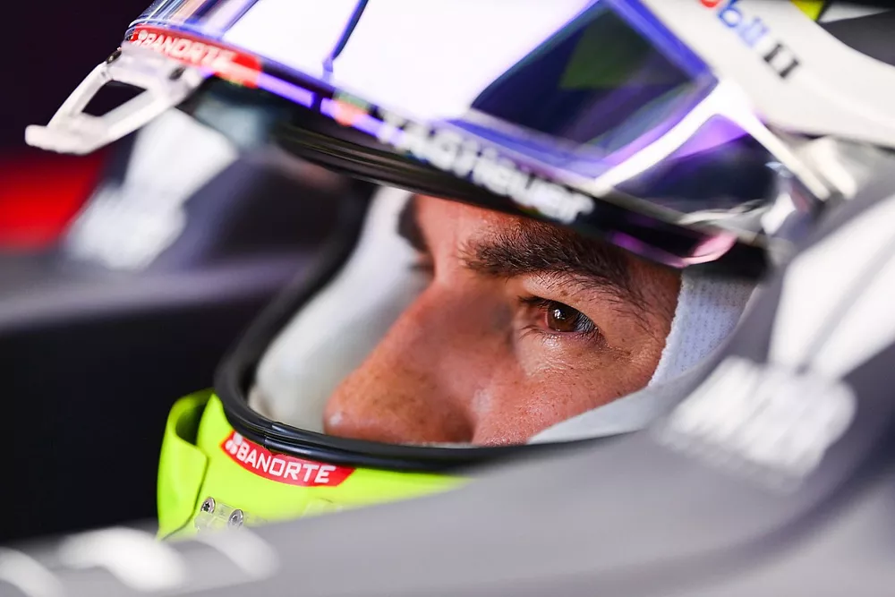

Как догнать Макса и в чем сложность Red Bull? Интервью Переса
Мексиканец стал первым «чужаком» в Red Bull, но смог одержать победу уже в шестой гонке за команду. Мы поговорили с ним о сезоне, о Максе Ферстаппене и не только
После многих лет в составе середняков пелотона Ф1 Серхио Перес вытащил счастливую карту и получил приглашение в Милтон-Кинс. По итогам 14 Гран При в его активе победа а Баку и подиум во Франции, однако в чемпионате пилотов он идет лишь пятым, а в квалификациях проигрывает Максу Ферстаппену 1-13.
Доволен ли Перес своими результатами, как собирается догонять напарника и что думает о боссах Red Bull Racing, мексиканец рассказал в интервью нашим коллегам из голландской редакции Motorsport.com.
Серхио, вы признавались, что адаптация в новой команде идет не так быстро, как хотелось бы. Что мешает этому процессу?
Тут много факторов. Но самое главное в том, что в Red Bull от меня требуется совсем не то, что прежде. Я привык к машинам, которые ощущаются совершенно иначе. Здесь же еще и другой мотор, что потребовало полностью изменить подход к пилотированию.
Кроме того, я должен был познакомиться со всеми инженерами и сотрудниками команды. Кто-то скажет, что это быстрый процесс, однако выстраивание персональных отношений требует известного времени – но в итоге он приносит тебе серьезную пользу.
Это правда, адаптация получилась долгой, хотя по ходу у нас было несколько успешных моментов. Периодически мне удается показывать скорость, хотя пока я все же не познал машину в достаточной степени, чтобы делать это стабильно.
Можно ли оценить, на сколько процентов уже продвинулась адаптация?
Это сложно, так как зависит от множества факторов. По ходу одного уик-энда ты чувствуешь уверенность в машине и добиваешься результата, но такие дни чередуются с другими – когда ты внезапно оказываешься далеко позади. Потому едва ли можно говорить о каких-то процентах. Могу лишь сказать, что ситуация осложняется тем, что сейчас мы проводим за рулем совсем мало времени.
Вы упомянули адаптацию к двигателю. В чем главное отличие между Honda и Mercedes с точки зрения гонщика?
К сожалению, я не могу углубляться в детали. Если говорить общими словами – разница между ними весьма велика. Она касается того, как мощность от силовой установки передается на колеса. От этого зависят действия гонщика с педалью газа. Потому мне пришлось менять свой стиль в сравнении с тем, к чему я привык.
По этой причине вы ориентируетесь на поход Макса при выборе настроек?
Нет, сейчас я все более и более использую собственный путь. Понемногу пробую разные идеи и надеюсь, что этот подход окажется продуктивным. Плохо лишь то, что из-за сокращения времени тренировок у меня нет возможности всерьез поработать с разными вариантами по ходу одного уик-энда. Нехватка времени сильно тормозит мой прогресс.
Ваши с Максом требования к машине сильно отличаются?
Определенные отличия есть. Например, я предпочитаю более стабильный задок, особенно в среднескоростных и быстрых поворотах. Он дает мне больше уверенности в машине. Это еще один момент, над которым мы сейчас активно работаем с командой, чтобы улучшить мою ситуацию.
Макс Ферстаппен, Red Bull Racing RB16B, Серхио Перес, Red Bull Racing RB16B
Как известно, до вас Пьеру Гасли и Алексу Элбону не удалось выжить в одних боксах с Максом. Почему это настолько сложно?
Разумеется, я не могу судить о тех, кто был до меня. Они оба очень хорошие и очень талантливые гонщики. Но о причинах, почему что-то пошло не так, вам стоит спрашивать у них.
Если же говорить о моей ситуации, то тут просто требуются выдержка и внимание. Мой случай особенный, а предстоящие изменения в правилах, несомненно, внесут свой вклад. Я очень их жду. Опыт этого года и стабильность окружения в команде принесут большую пользу.
К этой теме мы еще вернемся, а пока вот какой вопрос: в нынешнем сезоне Макс сражается за титул. Готовы ли вы принести в жертву собственный результат ради помощи ему? Обсуждалась ли эта тема внутри команды?
Понятно, что из нас двоих в этом году титул сможет выиграть только Макс. По этой причине вся команда должна помогать ему – и будет это делать. В то же время, мы ведем борьбу и в Кубке конструкторов. Потому распределение ролей будет определяться тем, какого сценария мы ожидаем по ходу уик-энда.
В любом случае, у нас понятная цель: стать сильнейшей командой и помочь Максу выиграть титул.
Red Bull продлила ваш контракт, но вновь всего на год. Считаете ли вы такой поход менее выгодным для себя, ведь в дверь уже настойчиво стучатся другие кандидаты во главе с Гасли?
Я не слишком отвлекаюсь на такие вещи. Даже если у тебя в кармане многолетнее соглашение, ты все равно должен добиваться результата на каждом этапе и всегда остаешься из-за этого под давлением.
Я не задумываюсь о подобных вопросах. Мне это не нужно. Если кто-то полагает, что после подписания долгосрочного контракта можно расслабиться, то он не прав. С таким подходом, мне кажется, вообще нереально попасть в Ф1.
Серхио Перес, Red Bull Racing
Команда еще до летнего перерыва сообщила вам о продлении контракта. Были ли у вас до этого опасения за такой исход – скажем, после неудачных Гран При?
Нет. Признаюсь честно, еще за несколько гонок до продления Кристиан Хорнер и Хельмут Марко сказали мне, чтобы я не оглядывался по сторонам, так как они довольны моими выступлениями и хотят продолжать эту историю.
Я смотрел на ситуацию точно так же. За прошедшее время, пусть его было и немного, между нами установилось серьезное взаимное доверие. И когда они мне что-то говорят, я полностью доверяю Кристиану с Хельмутом и могу положиться на них. И с этой точки зрения я не испытывал никаких волнений по поводу будущего сезона.
Давайте вернемся к будущему. Что вы в первую очередь собираетесь улучшить в ближайшие месяцы?
Тут нет никаких сомнений – квалификации. Мне обязательно надо проводить их сильнее. С гоночным темпом сейчас все уже неплохо, а вот квалификационный должен быть выше. Я откровенно признаю это.
Если искать в ситуации какой-то позитив, я скажу вот как: то отставание, которое есть у меня по субботам, к воскресенью исчезает. Но в любом случае я с самого старта хочу быть ближе к главным соперникам, а для этого должен сильнее проводить субботы.
Если заглянуть в более дальнее будущее – вы говорили, что видите возможности в правилах 2022 года. Насколько плотно вы вовлечены в работу над новой машиной?
В этот раз всем приходится начинать более или менее с чистого листа. Так что это, нет сомнений, серьезная возможность. И я действительно провожу много времени на симуляторе. Сначала это было необходимо, чтобы найти общий язык с машиной этого года, а сейчас мы уже переключились на новые правила.
Они совсем другие, потому требуют совсем иного подхода к пилотированию. Подойдут ли они мне лучше? Пока сложно сказать, но я в любом случае постараюсь адаптироваться как можно лучше.